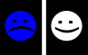
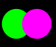

Image colors and channels#
Minimal
 Annotation of channels (staining, marker etc.) visible
Annotation of channels (staining, marker etc.) visible
Clearly annotate the channels with specific information, including staining (brightfield, e.g. H&E) or labelled molecules (e.g. CD4(Cyan) ) using text or text and colour for merged multi-label images.
Global BioImaging: Using OMERO.figure to add channel labels
See the creation of a panel of images using InkScape with imports from Fiji. https://youtu.be/CgfnlcxbjuI?t=3579
QuickFigures plugin in Fiji: https://youtu.be/9Crg-FAOHmc?t=386
 Adjust brightness/contrast, report adjustments, use uniform color-scales
Adjust brightness/contrast, report adjustments, use uniform color-scales
Intensity range adjustments should be monitored with the image histogram and done with care: a too wide intensity range results in ‘faded’ images that lack details, while a too narrow intensity range removes data. Use a range indicator LUT (e.g. HiLo in Fiji) to highlight pixels where data was removed due to a too narrow intensity range.
Plain brightness adjustments can increase background or decrease signal, without improving distinction between different objects, structures or intensities. Contrast increases bright and decreases dark intensities and can lead to a better distinguishability of signals. However, it also increases perceived intensity differences and may overemphasize real changes. Contrast adjustments directly applied on RGB color images changes color tones of stains. Therefore, only the brightness component of a color image should be adjusted in the most optimal case. Signal should not be clipped and intensity cutoff values should be reported in Materials and Methods to ensure transparency and reproducibility. Data clipping leads to information loss and over- or under-saturation, which both should be avoided to prevent misinterpretation of published images.
One quick possibility to adjust the contrast of multiple imaghould be compared in one figure can be achieved as shown here. Example images
or Omero.figure: https://www.youtube.com/watch?v=YeCFaB7VAAQ
 Image comparison: use same adjustments
Image comparison: use same adjustments
Any adjustments to the image, such as brightness/contrast must be consistent across all images within an experiment that might be directly compared.
Changes such as contrast adjustment, background subtractions, pseudo-coloring etc. should be kept strictly the same if different images are being shown for comparison. The same holds for the imaging settings before any image editing.
One quick possibility to adjust the contrast of multiple imaghould be compared in one figure can be achieved as shown here.
 Channel colors high visibility on background. Best visibility: grayscale
{kind=link}
Ensure the use of highly contrastive colors when choosing for your individual microscopy channels. Darker colors, like blue, are less visible on a black background while lighter colors, like yellow, are highly visible on a black background but less so on a brightfield image with a white background.
Image colors must be interpretable and accessible to readers, while not being misleading. High contrast colors are optimal, provided color-blindness is taken into account. The best visibility is always grayscale for single channel images as applying a Look Up Table (pseudocolour) onto any image makes the displayed pixels seem darker.
See figures within: https://journals.plos.org/plosbiology/article?id=10.1371/journal.pbio.3001161
Inverted Look Up Tables in Fiji: Single tweet tutorial by Christophe Leterrier https://twitter.com/christlet/status/1126919664880291840
References Accurate representation: https://doi.org/10.1007%2F978-1-62703-056-4_1 High visibility and accessibility: https://doi.org/10.1371/journal.pbio.3001161
 Multi-color: provide grayscale for each color channel
Multi-color: provide grayscale for each color channel
Grayscale images are often easier to visually distinguish fine detail within than color channels; providing them ensures the reader can see your phenotype to best effect.
For intensity-based images (e.g. fluorescence) the channels relevant for understanding the conclusion and analysis should be displayed best separately as single channels in a gray range (black to white). Sometimes inversion can positively impact visibility.
Exporting merge images and grayscale images from Fiji and aligning them in Inkscape: https://youtu.be/F6ll37NOgXc?si=ot8oPgYVQ9yh8Pwo&t=1504 (25:04-31:50)
Adding grayscale channels in OMERO.figures: https://youtu.be/Mty7_382kMM?si=FQmHvPx5xLjbeqPt&t=542 (9:02-13:00)
Sample images -
SVG: https://drive.google.com/file/d/13j5E4RD3Qxh9M08SNdha841p6EpbqIGF/view?usp=drive_link
PNG: https://drive.google.com/file/d/1jgVQdd12muB-qErsTFYCJEkMyU3d8-Uu/view?usp=drive_link
 Multi-color: if channels are merged, make accessible to color blind
{kind=link}
If creating merged images, ensure the LUTs chosen are separable for color-blind readers; online simulations can help you check this.
Maximally merge up to 3 channels in one composite image. Better are 2 only. For 2 channels the best color combination is green/magenta. For 3 channels cyan/magenta/yellow can be used. The latter might lead to optical oversaturation perception and might be negative in case of very bright signal.
Example: Pseudo colors can be added to individual channels in Fiji via the >Image >Lookup Tables menu OR via the BioVoxxel Figure Tools LUT Channels Tool plugin. The latter offers a CDV (color deficient vision) test option to check if color combinations are “color-blind” friendly
Recommended
Provide intensity scales (calibration bar) for grayscale, color, pseudocolor
{kind=link}
Intensity calibration bars (or scales) should be provided for better interpretablility of intensity values, ranges and distributions. They can also serve to more quantitatively highlight differences seen by eye. Calibration bars are absolutely necessary if multi-pseudo-colors are used to provide the information about the relation between different colors and actual pixel intensities. While such bars can be placed within images to save space provided they are sufficiently visible, it is often easier to utilize and interpret color scales when placed outside of the image.
Example: In Fiji / ImageJ use >Analyze >Tools >Calibration Bar…
Ideal
 Pseudo-colored images: additionally provide grayscale version for comparison
Pseudo-colored images: additionally provide grayscale version for comparison
See links for guides and options for creating pseudo-colored images. Of course, greyscale provides the best and usually “fairest” contrast for a single channel, though LookUp Tables can emphasize certain pixel value ranges that are relevant to a particular study.
 Gamma adjustments: additionally provide linear-adjusted image for comparison
Gamma adjustments: additionally provide linear-adjusted image for comparison
Gamma as well as other non-linear adjustments change relative pixel intensity and color relations and can negatively influence optical intensity comparisons. Overenhancement of specific regions can also occur. Therefore, those changes need to be reported and the original images should be provided for transparency. Upload of original image data to a publicly accessible data repository e.g. Zenodo is recommended as an optional validation step for the reader.
TODO Further reading https://micro.magnet.fsu.edu/primer/java/digitalimaging/processing/gamma/index.html